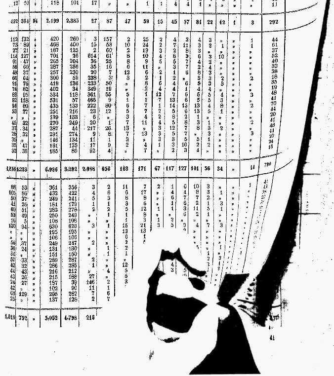

Miscellanea

Economic History Sources
- Index to the volumes of "Beiträge zur Statistik des Königreichs Bayern"
- Index to the volumes of "Österreichische Statistik," Alte Folge (Vols. LXIII - XCI)
LaTeX
- Package (.zip) with all files to compile a full dissertation in LaTeX complying with Harvard's GSAS guidelines
Contains the class file "harvardeconthesis.cls", orginally created by Halla Yang and further developed by me - Instructions